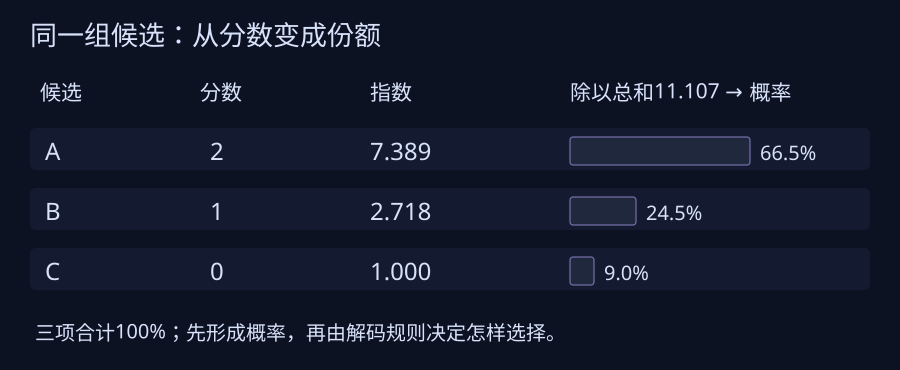

04 / 图解交互课程
分数、Softmax与温度
把抽签的直觉接回三个关键词
| 词 | 负责什么 | 不负责什么 |
|---|
| logits | 模型给候选的未归一化分数 | 还不是概率 |
| softmax | 指数变换后归一化为概率 | 不在这一步选出最终词 |
| 采样 | 按分配好的概率随机选择 | 不修改模型知识 |
01 · 分数如何变成概率

先找输入，再沿箭头读输出。点击大图查看。- 候选先有分数，但分数不直接代表百分比。
- softmax先取指数，再除以总和。
- 温度先缩放分数，再进入softmax；最后才按解码规则选择。
02 · 每一步传递什么？
| 步骤 | 候选A | 候选B | 候选C |
|---|
| 原始分数logits | 2 | 1 | 0 |
| 取指数exp | 7.389 | 2.718 | 1.000 |
| 总和11.107，逐项除总和 | 66.5% | 24.5% | 9.0% |
| 温度降低到0.5：先把分数除0.5 | 新分数4 | 新分数2 | 新分数0 |
| 再次softmax | 86.7% | 11.7% | 1.6% |
03 · 先预测，再操作
先预测：温度降到0.5，最高分候选的份额会增大还是减小？拖动温度，看三个概率条一起变化。
04 · 深入解释、来源与自测
模型给了2、1、0，为什么不是直接挑2？分数不是概率。先经softmax变成正数且总和为1，再由解码规则决定怎样选。低温提高最高分的优势，高温分散机会，都不会凭空补充事实。
Softmax到底做了什么？一行一行算
先用一个问题：当前词要从三条信息里取内容，匹配分数是2、1、0。分数有大小，却还不是份额；直接除以总和也不适合任意含负数的分数。
| 步骤 | 信息A | 信息B | 信息C |
|---|
| ① 缩放后的匹配分数 | 2 | 1 | 0 |
| ② 取指数 exp(分数) | 7.389 | 2.718 | 1.000 |
| ③ 除以总和11.107 | 0.665 | 0.245 | 0.090 |
| ④ 对应Value内容 | 10 | 20 | 30 |
输出≈0.665×10＋0.245×20＋0.090×30＝14.25。它把三份内容混合起来，并没有抽签选出一份。上面用标量方便看清，真实Attention的Value通常是向量，每个维度按相同权重加权。
为什么这样变换？指数把任意实数变成正数，除以总和让三项加起来等于1；指数还会放大分数差距。三项若同为0，份额就是各1/3；把三项一起加100，份额不变，因为公共因子会约掉。实际实现常减去最大分数，避免指数数值过大。
把softmax接回Q、K、V
当前表示 → Q（这次拿来查询的向量）
其他位置 → K（参与匹配）与V（提供内容）
Q和每个K做点积 → 除以√dₖ → 排除不允许看的位置
→ softmax：变成总和为1的权重 → 对V加权求和
缩放在softmax之前：维度增大可能让点积幅度增大，导致softmax过于尖锐、梯度变小，所以原论文使用√dₖ缩放。因果mask同样在softmax之前：不允许看的位置用负无穷分数表示，取指数后权重就是0。匹配权重表达这次如何聚合信息，不是事实可信度。
现在调滑块：只抬高A的分数，看B、C为什么一起失去份额 →
7.3 Temperature：改变下一token的采样分布
先把候选和分数固定。温度不负责写入新知识，只负责改变这些候选的概率分配。这样看下面的softmax，你能清楚区分模型给了什么分数，解码又怎样使用它。
模型输出logits后，temperature通过softmax(z/T)改变概率分布的尖锐程度，再从候选token中采样。
把刚才的直觉一步步算出来
先分清logit、概率与采样。logit可以是任意实数；softmax将它们变成和为1的概率；采样再按照概率抽一个结果。temperature通常在softmax前把logit除以T，因此改变的是分布形状。
固定logits=[3,2,1]，T=1时约[0.665,0.245,0.090]；T=0.5时约[0.867,0.117,0.016]；T=2时约[0.506,0.307,0.186]。模型知识和logits都未改变。
Top-k先保留k个候选，top-p按累计概率保留一组候选，再重新归一化。这些采样规则可以与温度组合，但组合顺序由实现规定。低温不保证真实；若最高分候选错了，它可能更稳定地选错。
换你试一次：先猜，再算
T=1时保留top-2候选，对原概率[0.665,0.245,0.090]重新归一化后是什么？
参考答案与计算结果
约[0.731,0.269,0]。截断改变支持集合，温度仅重塑未屏蔽候选间概率。
这个类比帮到哪里，停在哪里
温度不增加知识，也不保证更真实或更有创意。T=0通常由服务实现为贪心等特殊策略，不能直接代入除法公式。
关联视频 · 本文为教学改写，非逐字转录。
先预测，再动手
先记下当前输出；只改一个条件，观察数值与图形怎样变化，再用本课过程解释原因。
用一道题检查是否懂了
所有logit加100，softmax概率会变吗？
查看对应来源专题、完整算例与代码 →
检查这次操作，你真的看懂了吗？
“好”的概率70%，连续抽两次都没选到，是否程序一定错了？
答案与理由
不一定。概率是随机规则，不保证每次或少数次必选最高概率项。